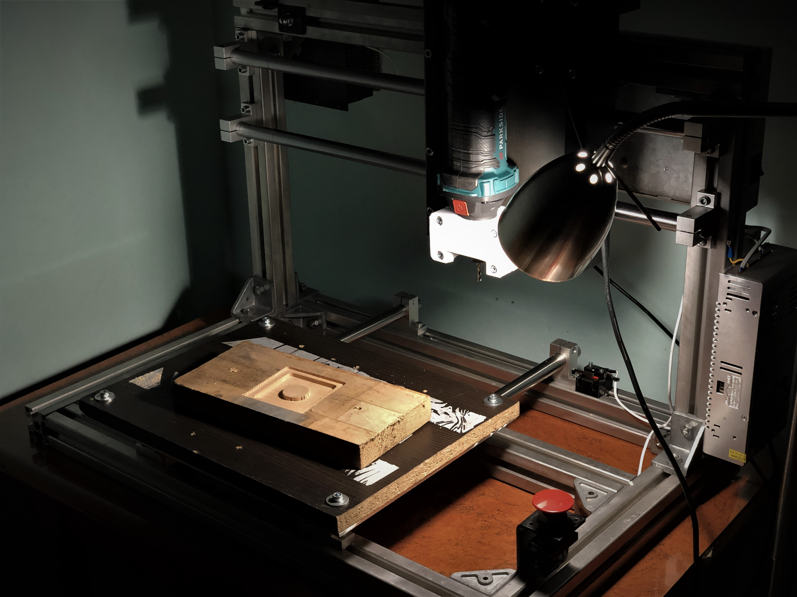
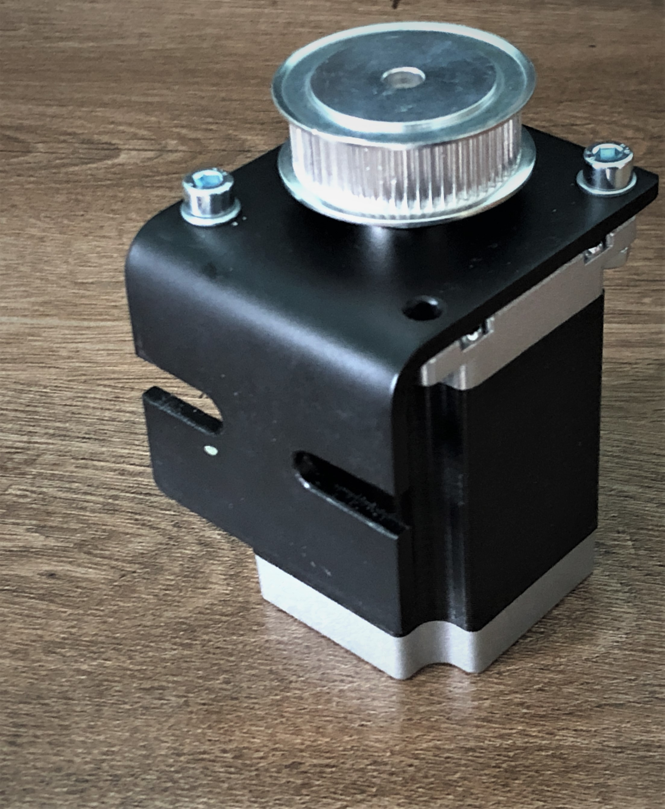
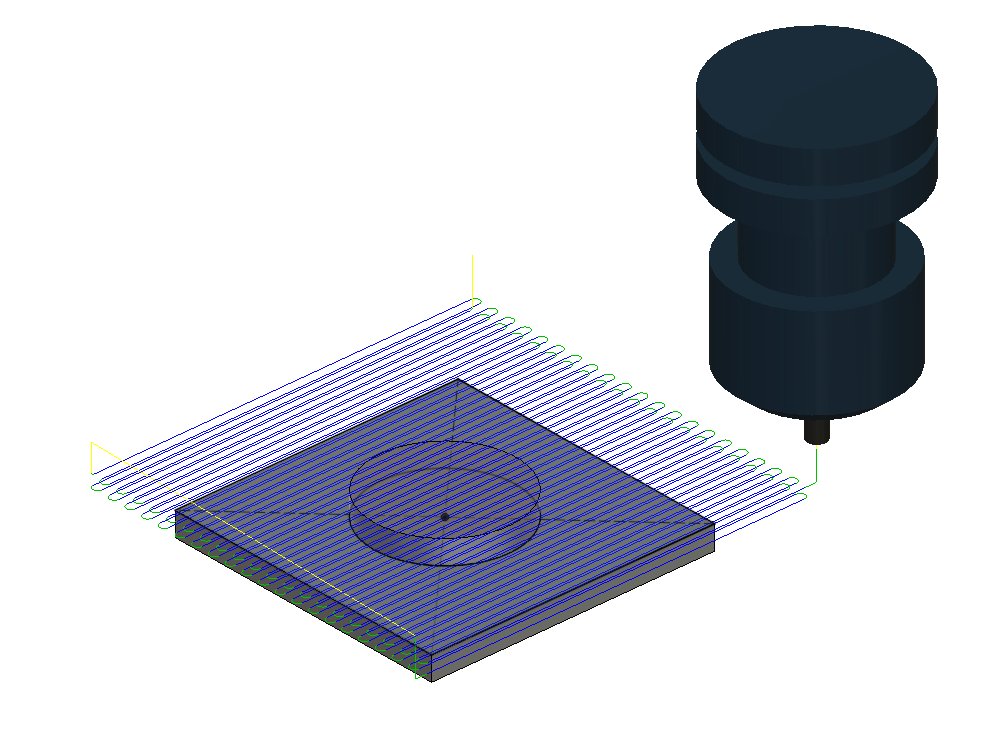
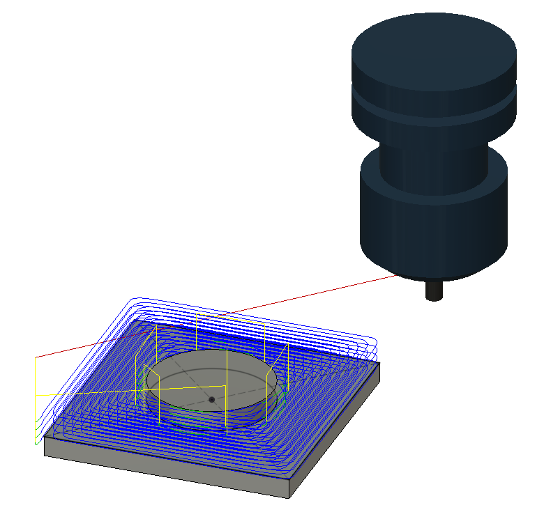
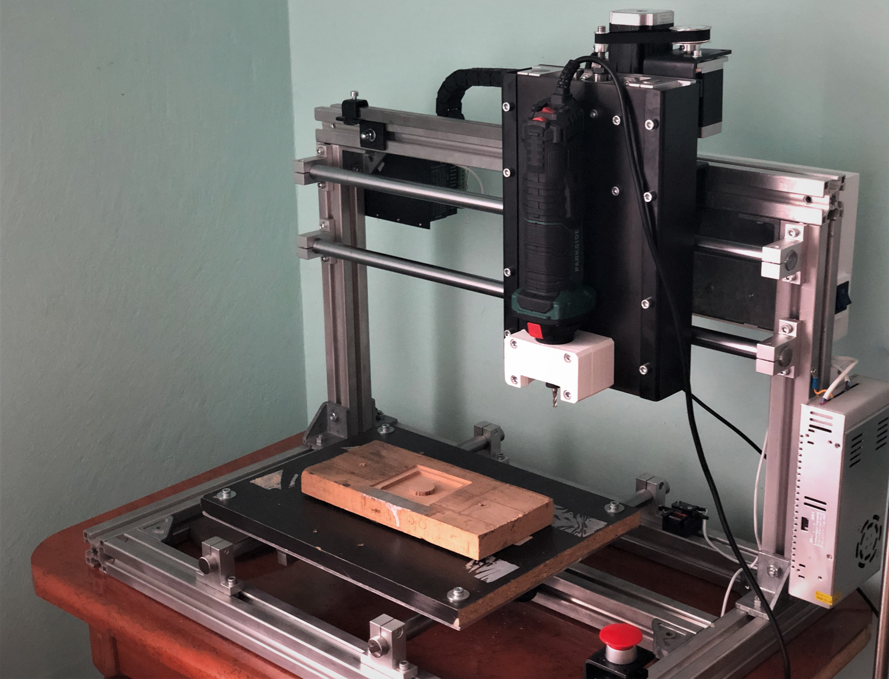

CNC Router - Part 3: Testing
Mar 8, 2020 20:52 · 353 words · 2 minute read

Adding “backplate” reinforcements
As expected, so-called backplate was showing too much deflection to be acceptable - quick fix was to add L-sections on both of its sides, preventing bending when loaded.
 Backplate L-sections reinforcements
Backplate L-sections reinforcements
Wiring electronics
Based on All-metal 3D Printer experiences, single electronics cabinet containing all components is not the best solution. With everything packed so tight cooling is problematic and while maintenance is already difficult, debugging is simply impossible. CNC Router will have split design with main electronic cabinet with easily detachable cover, 24V power supply and stepper motor drivers all mounted separately with ease of access in mind.
 Import BigTreeTech SKR1.3 acting as a Smoothieware host
Import BigTreeTech SKR1.3 acting as a Smoothieware host
 Wiring close-up
Wiring close-up
One possible issue with this wiring schema are 230V lanes right next to signal wires - in case of any weird misbehavior this is first place to look at.
 Assembly completed
Assembly completed
Issues with Z axis
Just by looking at Z axis one could tell that it would not be powerful enough. While it had the torque required to move Z axis assembly at slow pace, it was clear it won't have enough power for any rapid movements or drilling operations.
 CAD model of new Z axis setup
CAD model of new Z axis setup
New design will incorporate 2Nm NEMA23 stepper motor driving trapezoidal screw via 3:1 GT2 belt and pulley setup enabling it to turn slower, with greater torque (torque vs rpm relation is not linear). GT2 belt can be tensioned by sliding stepper motor in X axis direction on its mount.
 Z stepper mount with cutouts allowing to tension the belt.
Trapezoidal screw has been turned to 8mm diameter on its end for better fit of GT2 pulley, so locking screw won't try to make their way in between threads.
 Completed Z axis transmission
Completed Z axis transmission
Test cut in wood
Test cut will consist of simple facing and pocket operations. Those results are actually from second attempt, after the workpiece was properly mounted (double sided tape was not enough for).
 Setting up the cut
Setting up the cut
Homing all axes
 Facing toolpath
Facing operation
 2D pocket toolpath toolpath
2D pocket operation Close-up
Results

 Results after some light sanding to deburr the edges
Results after some light sanding to deburr the edges